Connect to Gremlin, Cypher, AQL, DQL or SPARQL, run a query, and see your data as an interactive 2D or 3D graph, on a world map or a globe, as a table or raw JSON. Edit it and commit changes back, ask an AI about it, or generate a whole graph from text.
Runs entirely in your browser — nothing to install to try it, and your queries and connections never leave your machine.
One page, no install. Connect, query, visualize, debug and edit — then export the result.
Talk to your database with no proxy in between.
A vendored Monaco editor that knows your graph.
A conversation about your graph, with your own key.
Flip any result between views instantly.
Vertices that carry coordinates, drawn where they are.
Find out what the graph holds before you query it.
gdotV-style step-through for Gremlin.
Mutations are staged and committed on your word.
Bring data in, take pictures out.
Let Claude Code or Claude Desktop query through a viewer tab.
Hand somebody the view you are looking at.
Comfortable from the first minute.
Every result is one click away from four representations, with a search box and per-label filter in both graph views, and a map or a globe behind them when the vertices have coordinates. Style each vertex label with its own color, size, display property and icon.
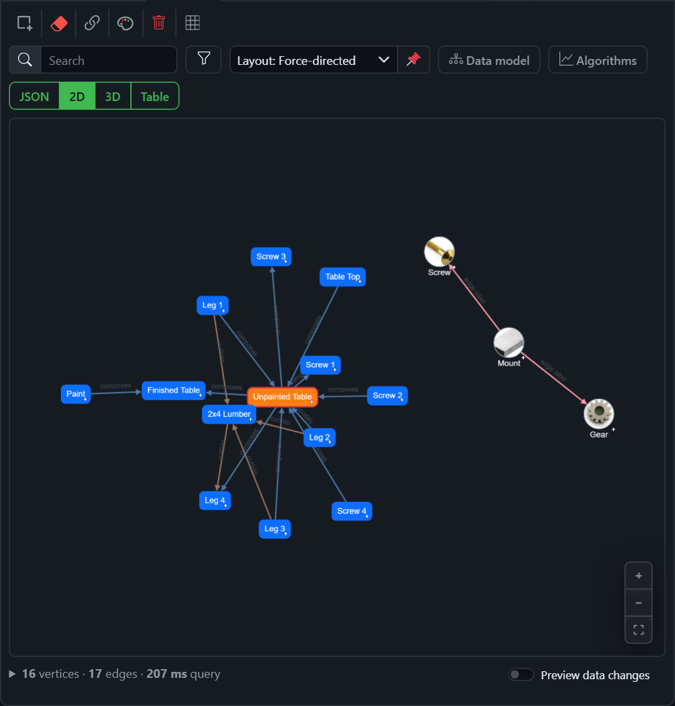
Turn Detailed view on for a label and its vertices are drawn as cards: the label, the name, and the properties you tick to show, so a part reads at a glance without a click. The Styling window sets each label’s color, size, shape, icon and 3D model, per label in this browser or per node saved to the database, and keeps whole stylesheets to apply again.
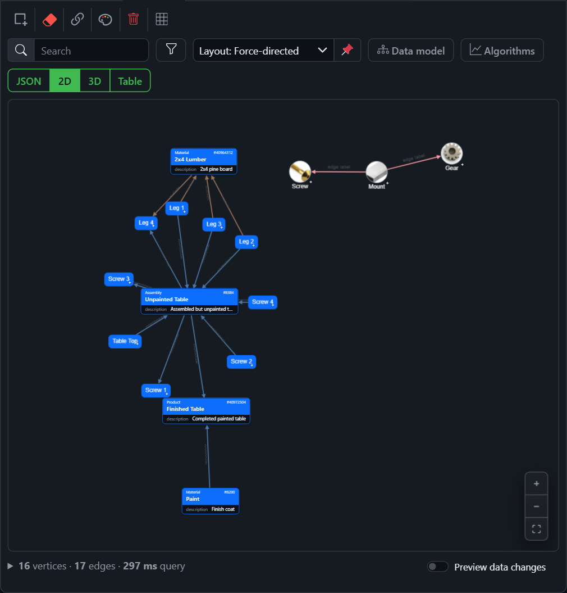
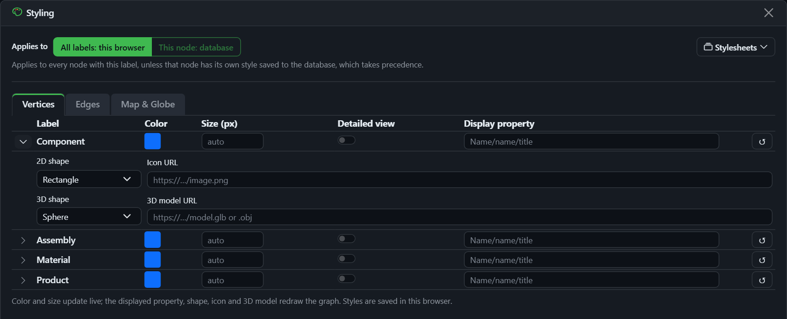
A self-hosted Monaco editor highlights Gremlin, Cypher, SPARQL, AQL and DQL, auto-closes brackets and quotes, and completes real vertex labels, edge labels and property keys pulled live from your database.
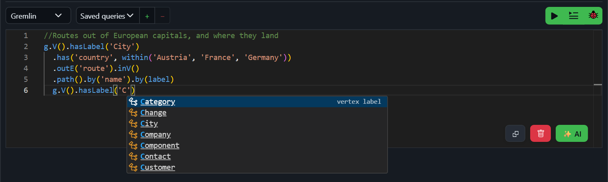
Vertices that carry coordinates are drawn where they are: hover 2D and pick Map, or hover 3D and pick Globe. Nothing to configure: lat and lon, a "48.2, 16.4" string, a GeoJSON or WKT point are all found by convention.
The satellite and outline earths ship with the app, so the map works offline with no key and no outside service. The layers button in the corner switches to a street, topographic or satellite map from a free tile server in one click, or to a server of your own with its key, kept in your browser.
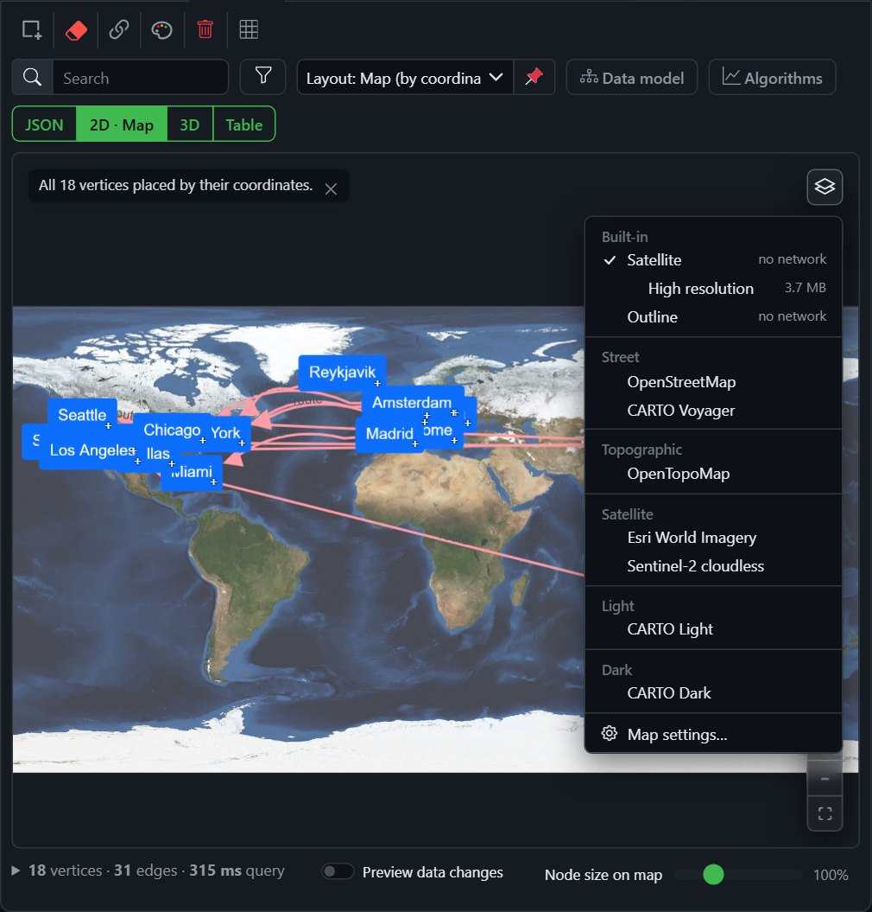
On the globe, links arc over the surface and labels on the far side of the earth hide themselves. Zoom from the whole planet down to a street: the vertices keep their size on screen, and a tile server's map gets sharper as you go.
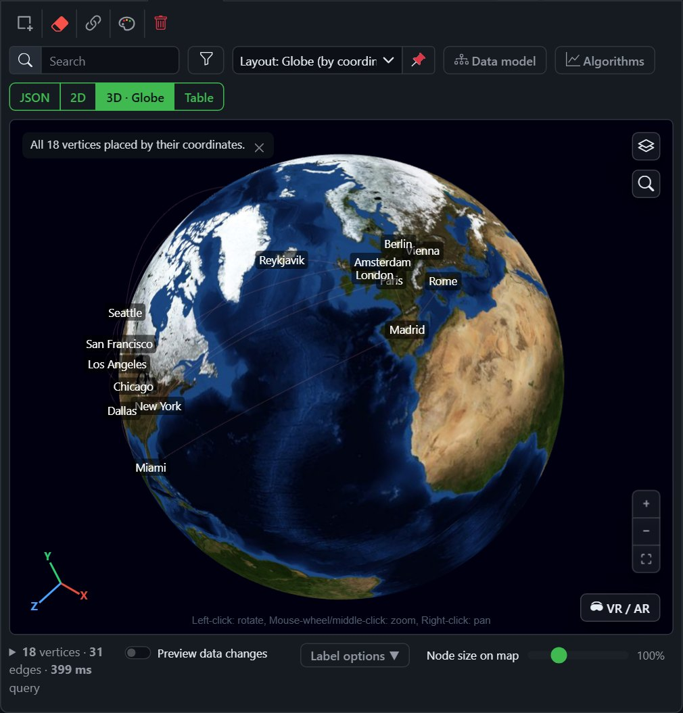
The magnifier under the layers button looks up an address or a place's name and takes the Map or the Globe there, with a pin on it and its coordinates to copy. Nothing leaves the browser until you press Enter, and then only to the geocoder you chose: OpenStreetMap's by default, or Photon, or one of your own. Vertices with an address and no coordinates can be looked up the same way, the ones you tick, and placed on the map as changes to commit.
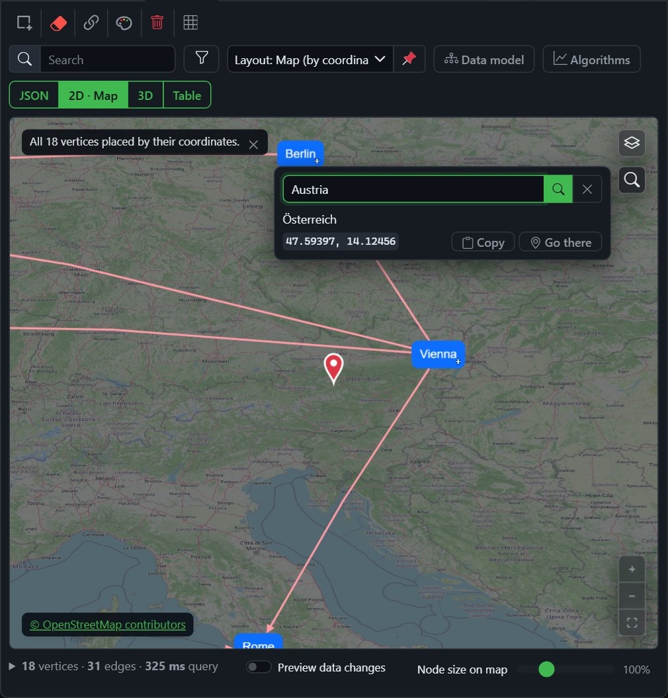
Map settings takes a tile server’s URL and key, so the Map and the Globe draw from your own server, a free one, or a commercial one with your key; and it names which geocoder looks places up, OpenStreetMap’s own, a Photon, or a Nominatim you run, so an address need not leave your network. A slider under the map sets how large the nodes are drawn on it, and they keep that size as you zoom.
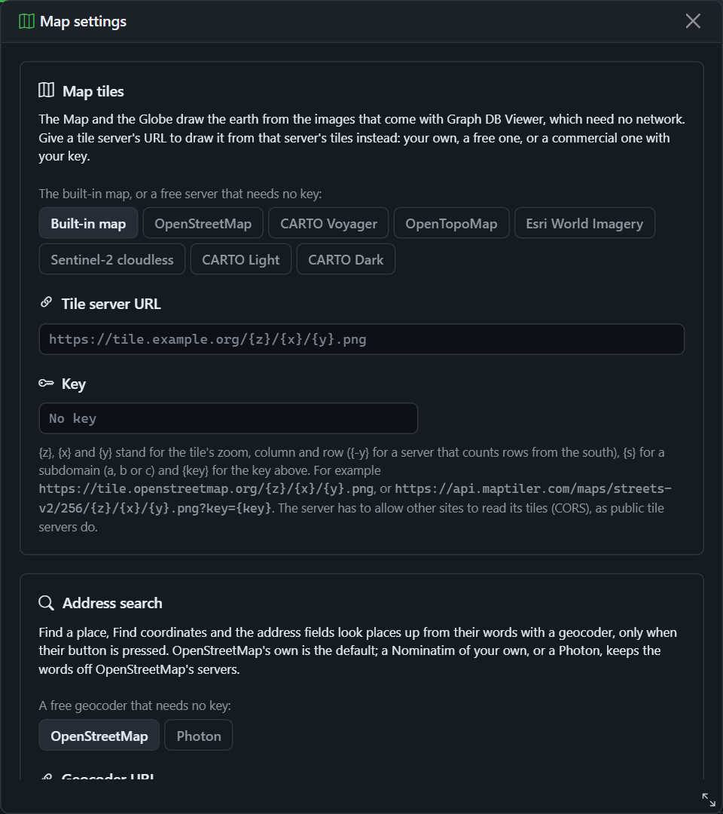
Bring your own model: Anthropic, OpenAI, Gemini or any OpenAI-compatible server. Nothing is sent until you press Send, and every request shows what it cost.
Describe what you want and the assistant writes the query against your live schema. Tool-capable models run read queries themselves to check their answer, under a setting you pick: ask each time, run reads, or run reads and writes. Attach a file, a photo or a screenshot, or speak your question, and come back to any chat later.
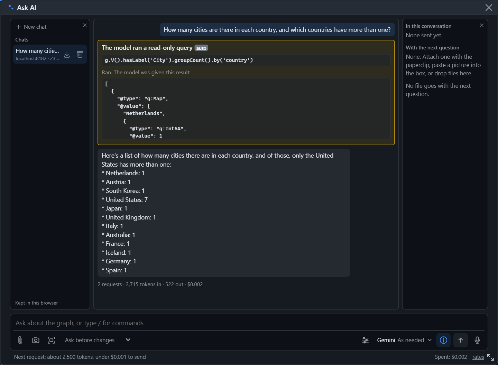
A short wizard takes the text, a Word, Excel, PDF or CSV file, or a Wikipedia article, and what to look for. The model answers with strict JSON that the app cleans up (merging “Acme” and “Acme Inc.” into one node) and shows as a card: the counts, the labels and the exact script. Then replace the drawing or merge into it, and write to a database only when you say so.
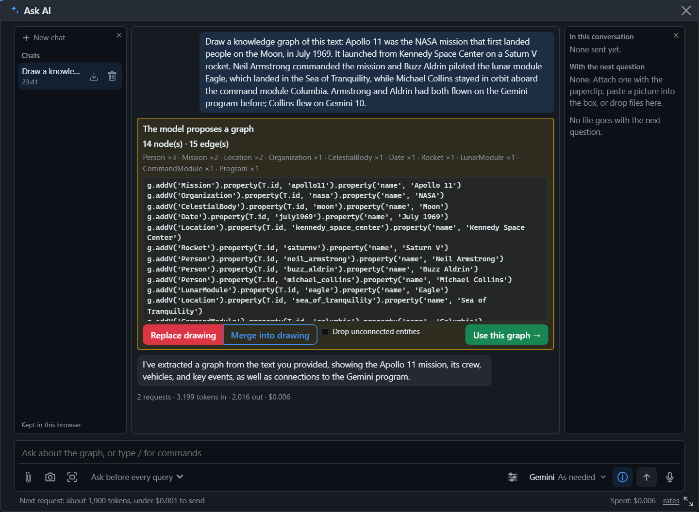
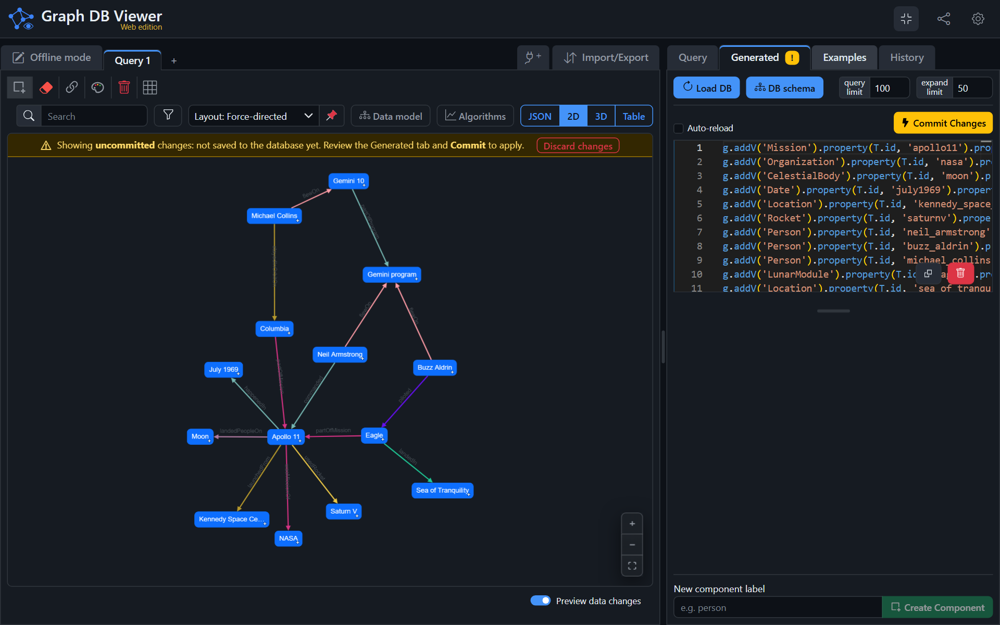
The step debugger re-runs your query truncated at each step and shows how many traversers survive — so a query that returns nothing stops being a mystery.
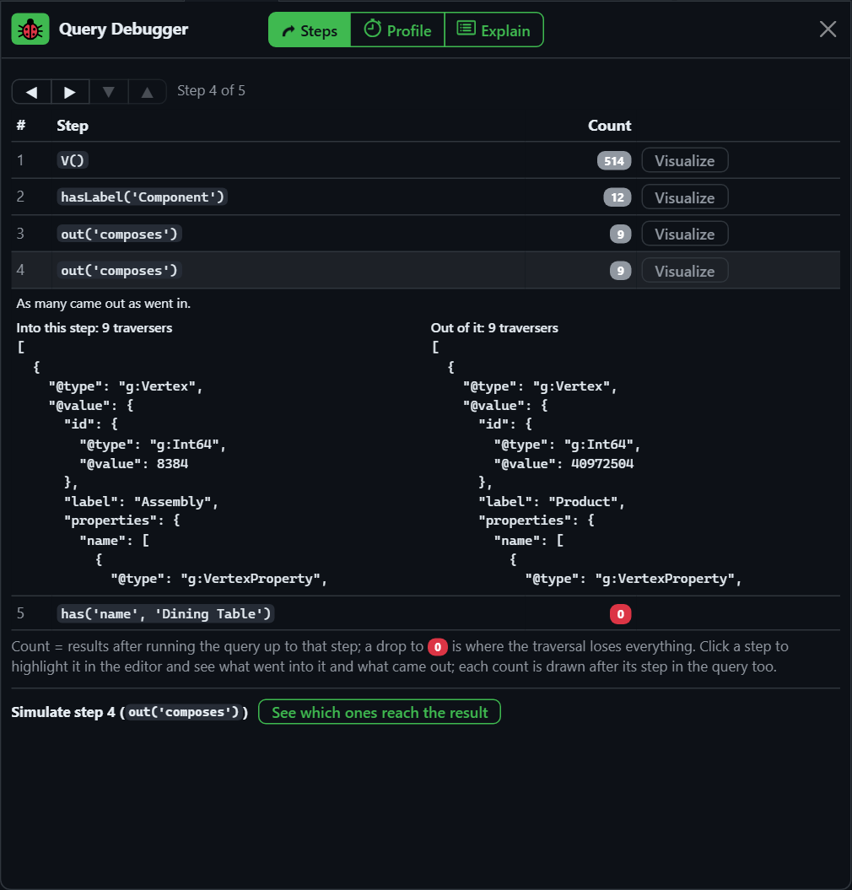
Each step shows the traverser count; the red zero is where every result was dropped. Open a step to see what went into it and what came out, or visualize that intermediate result in 2D or 3D.
Anything reachable from your browser over WebSocket, HTTP (with CORS) or Bolt works with no server component. For a database that sends no CORS headers, sits on a private network or speaks only Bolt to servers, the optional server edition connects from its host instead.
| Database | Query language | Route |
|---|---|---|
| Apache TinkerPop / TinkerGraph · JanusGraph | Gremlin over WebSocket or HTTP | ✔ Browser or server |
| Azure Cosmos DB (Gremlin API) | Gremlin over WebSocket, the key as the login | ✔ Browser or server |
| Neo4j · Memgraph | Cypher over Bolt | ✔ Browser or server |
| ArangoDB | AQL over HTTP | ✔ Browser or server |
| Dgraph | DQL over HTTP | ✔ Browser or server |
| GUN | Peer-to-peer | ✔ Browser |
| Fuseki · Blazegraph · GraphDB · Virtuoso | SPARQL 1.1 over HTTP | ✔ Browser or server |
| Wikidata · DBpedia (public) | SPARQL over HTTPS | ✔ Browser or server |
Nothing to install — open the live demo and load a built-in sample graph or paste a Mermaid diagram. Prefer to run your own? It's a static Blazor WebAssembly app: clone the repo and start the dev server.